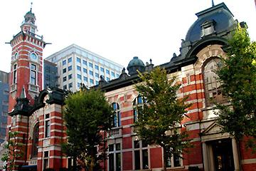

みなとみらいの歴史
みなとみらい事業を実行するにはさまざまな障害があった。それにも関わらず実施せざるを得なかったのには理由がある。
歴史は第二次世界大戦後まで逆上る。1965年頃、日本は第二次世界大戦による混乱を経て日本経済が高度成長に突入した頃、横浜市は年間10万人を超える人口急増都市であった。そのため、財政圧迫の中、戦争で荒廃した都心の債権、郊外の乱開発の防止に同時に取り組む必要があった。そのために、当時の市長は都市計画の専門家を招き、６大事業の仮想をまとめた。
以下資料より引用
『６大事業とは、横浜の都市構造を抜本的に強化するためのプロジェクト群であり，「高速道路」「地下鉄」「ベイブリッジ」の３つの交通基盤建設事業、郊外の乱開発を防止し、３０万人の新都市を造る「港北ニュータウン建設事業」、住宅地と混在する郊外工場を移転させるための受け皿となる「金沢地先埋立地造成事業」、そして弱体化した都心部を再開発し、横浜の拠点性を回復するための「都心部強化事業」の６つの戦略的事業からなっていた。
〜中略〜
都心部強化の目標
①分断された関内地区と横浜駅周辺地区をみなとみらい２１事業によって結びつけ、一体化された強力な商業業務機能と優れた環境を有する都心を形成する。
②そのため、ベイブリッジと高速道路に、港湾関係のコンテナ・トラックなど、都心部に不要な通過交通を負担させ、都心部の交通を整理し、歩行者のネットワークを形成する。
③ウォーターフロントを市民に解放された緑豊かなオープンスペースとして再生する。
これによってみなとみらいづくりが始まる。
